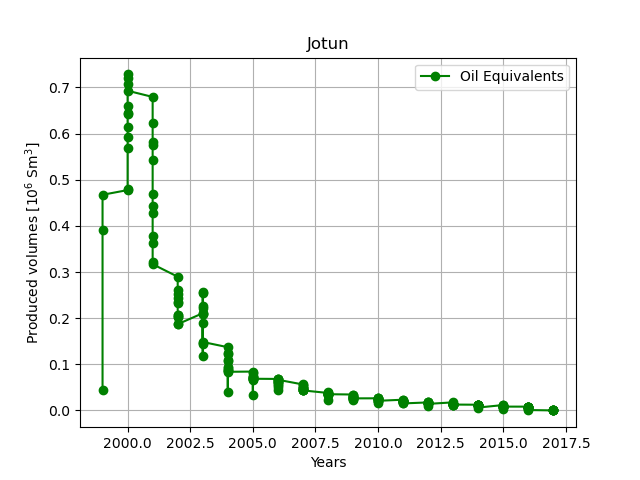
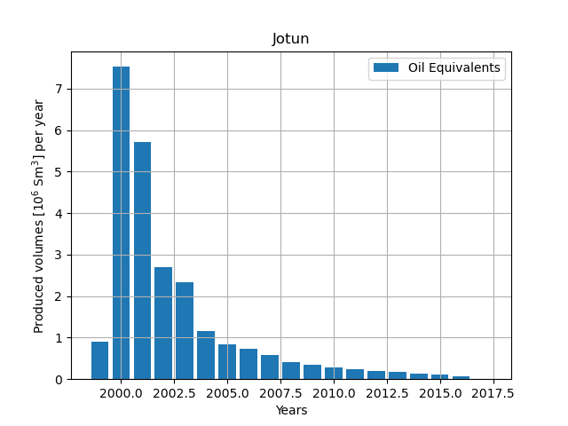
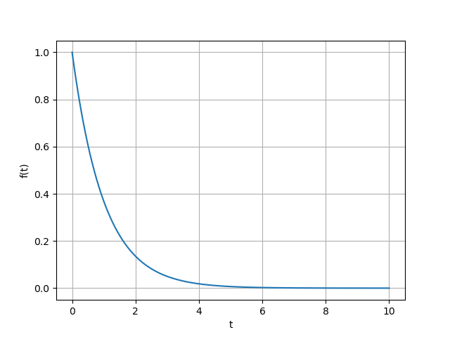

In jotun_data.py in the data folder "official production data":" https://factpages.sodir.no/en/field/PageView/All/43604" are available as lists. You can import them as
import sys
sys.path.append('../data/')# alternatively put jotun_data.py in your folder
from jotun_data import years, months, oil_gross, gas_gross, oe_gross, wat_prod
Question:
oe_gross vs the years data. Try to make the plot as similar as possible to figure 1.Figure 1: Jotun production data.

#answer
Oil equivalents are simply the sum of oil volumes and gas volumes. (Or to be more specific: The convention used when comparing gas volumes with oil volumes is to divide the gas volumes by 1000, see conversion factors. However, we do not need to do anything here because the unit of the gas volumes in jotun_data.py is \( 10^9 \) Sm$^3$ and the oil volumes in \( 10^6 \) Sm$^3$.)
Thus, to calculate oil equivalents from our lists that contain oil and gas volumes you just have to add them together.
Question 1:
Use vanilla Python to loop over oil_gross and gas_gross, create a new list, which holds your calculated oil equivalents volumes. Note: You can compare with oe_gross to check if your calculations are correct.
Question 2:
Convert your lists to numpy.arrays, by doing e.g. np.array(oil_gross). Perform the same calculation as in Question 1, but this time using Numpy (and no loop).
#answer
Question 1: Use vanilla Python to create a loop and sum up all oil equivalents that was produced for the year 2000. (If you did everything correct you should get 7.529206 10$^6$Sm$^3$ for the year 2000.)
Question 2:
Create to new numpy.arrays, by
years_np=np.array(years)
oe_np=np.array(oe_gross)
Show how you can use Boolean masking to pick out only produced oil equivalents for the year 2000, without using a loop. Use np.sum() to sum all the volumes.
Question 3:
Use np.unique() to create a unique np.array() of years. Loop over this array and use Boolean masking to create a new list (or np.array()) that holds the total produced oil equivalents for that year.
Question 4: Use the results in the previous question to create a bar plot and compare with figure 2
Figure 2: Jotun production data.

Question 1:
Create a dictionary that holds all the Jotun data (i.e. years, months, oil_gross, gas_gross, oe_gross, wat_prod) you imported in Exercise 1. Choose suitable key names to use in the dictionary.
data_dict={# fill inn}
Question 2:
Create a loop over all the keys in data_dict and show how you can print out the keys and the values in the dictionary.
Question 3:
Create a DataFrame from your dictionary. Show how we can use DataFrame.groupby().sum() to find production of oil, gas, water, and oil equivalents per year.
Question: Create a function from the following code. The function should take as argument the field name and return a DataFrame with field data. Include a docstring in the function.
df_prod=pd.read_excel('../data/field_production_gross_monthly.xlsx')
df=df_prod[df_prod['Field (Discovery)'] == 'JOTUN']
def get_data(field):
# write code here ..
return #...
Optional: Make the function more robust, by allowing for case insensitive names and/or give a warning if no data was extracted for the field.
#answer
Question 1: Create a function that takes as argument the name of a field, and plots oil equivalent production vs time. (Hint: you should use the function you wrote in the previous exercise to extract the data.)
def plot_field(field):
# create plot ...
Question 2:
Extend the function such that if no data is extracted from the field, write a warning and do not make the plot. (Note: you can use DataFrame.empty() to check if the DataFrame contains data.)
Optional: Extend the function such that it can take in a list of values (e.g. gas, oil, etc.) that should be plotted in the same plot.
#answer
Question 1: Explain what the following code does. By adding comment lines to each line of the following code.
field='JOTUN' # com1
#--------- start --------
df=get_data(field) # com2
data_folder=pt.Path('tmp_data') # com3
data_folder.mkdir(exist_ok=True)# etc.
new_name=str.replace(field,'/','')
new_path=data_folder / new_name
new_path.mkdir(exist_ok=True)
df2=df[df[df.columns[0]]==field]
df2.to_excel(new_path/'production_data.xlsx',index=False)
#-------- stop ----------
Question 2:
Create a function from the code between -- start -- and -- stop --. It should take as argument the field name.
def write_data(field):
# ....
return #optional
Question 3:
If your Excel file is open in another program, the command df2.to_excel(new_path/'production_data.xlsx',index=False), will fail. Use the try: and except: commands to try and write the Excel file, and if this fails, give the user a warning.
Optional:
Extend the previous function and introduce a default argument, representing tmp_data so that the user can specify the directory name.
#answer
The following code writes all field data to separate Excel files.
df=pd.read_excel('../data/field_production_gross_monthly.xlsx')
fields=df[df.columns[0]].unique() #skip duplicates
data_folder=pt.Path('tmp_data')
data_folder.mkdir(exist_ok=True)
for field in fields:
new_name=str.replace(field,'/','')
new_path=data_folder / new_name
new_path.mkdir(exist_ok=True)
df2=df[df[df.columns[0]]==field]
df2.to_excel(new_path/'production_data.xlsx',index=False)
Question: Use one or several functions to achieve the same as the block of code above does. Comment on your choice.
#answer
Rewrite the following functions, using Pythons lambda function
def remove_space(x):
return x.strip()
def upper_case(x):
return x.upper()
#answer
Create two assert tests for remove_space and upper_case defined in the previous exercise.
#answer
Question1: Take a look at the following class, and explain what each line does, by adding comments behind each line.
class DeclineCurve:
def __init__(self,q,tau):
self.q=q
self.tau=tau
def f(self,t):
return self.q*np.exp(-t/self.tau)
Question2:
Add a function to the class, named plot(), such that the following code produce the output in figure 3. (To create a suitable list of t values you can do t=np.linspace(0,10,1000), or more general t=np.linspace(0,10*self.tau,1000))
A=DeclineCurve(1,1)
A.plot()
Figure 3: An exponential decline curve.

Inspect the following class
class ProdData:
"""
A class to extract production data from FactPages
"""
def __init__(self):
self.df_prod=pd.read_excel('../data/field_production_gross_monthly.xlsx')
def get_data(self,field):
"""
Extracts data for a specific field
"""
df= self.df_prod[(self.df_prod['Field (Discovery)'] == field)]
return df
Add the following functions to the class:
write_data(field) write data for a single field to an Excel filewrite_all_data() write an Excel file for each fieldThe following is optional:
../data/field_production_gross_monthly.xlsx does not exists or that it is not possible to write data to file.The Dash library is one of the most popular libraries. Install it by doing
conda install dash
(If this fails, run pip install dash). Run the following code, which is copied from a minimal dash app.
from dash import Dash, html, dcc, callback, Output, Input
import plotly.express as px
import pandas as pd
df = pd.read_csv('https://raw.githubusercontent.com/plotly/datasets/master/gapminder_unfiltered.csv')
app = Dash(__name__)
app.layout = html.Div([
html.H1(children='Title of Dash App', style={'textAlign':'center'}),
dcc.Dropdown(df.country.unique(), 'Canada', id='dropdown-selection'),
dcc.Graph(id='graph-content')
])
@callback(
Output('graph-content', 'figure'),
Input('dropdown-selection', 'value')
)
def update_graph(value):
dff = df[df.country==value]
return px.line(dff, x='year', y='pop')
if __name__ == '__main__':
app.run(debug=True)
Question:
Can you modify the code above to read and plot our data in ../data/field_production_gross_monthly.xlsx? (Note: you can also download the production data directly by copying the correct address, by right-clicking on the Excel (or csv) tab here.)